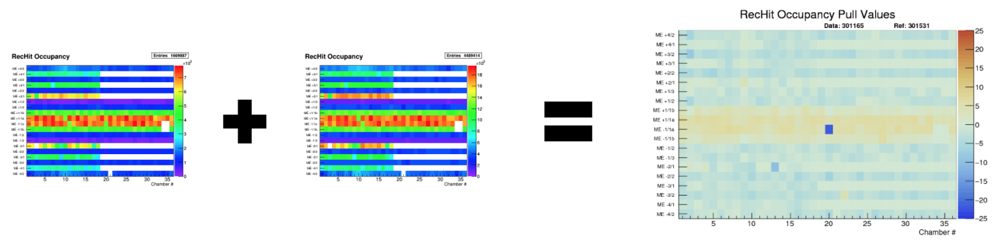
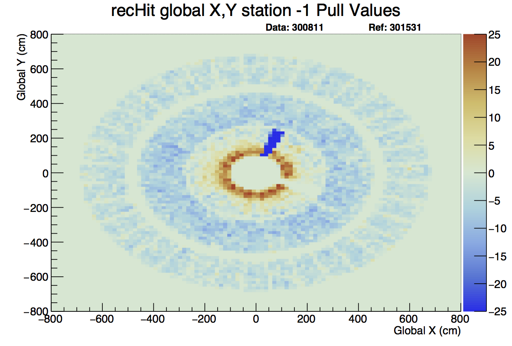
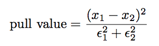
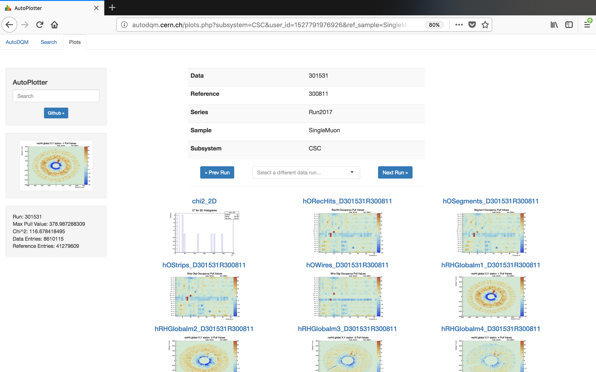

{kind=link}
AutoDQM is a statistical tool for Data Quality Management (DQM) at the Large Hadron Particle Collider.
Motivation¶
{kind=link}
Before AutoDQM, DQM shifters were tasked with looking at hundreds of DQM histograms, looking for hard-to-spot issues in data collection. AutoDQM runs long established statistical tests using ROOT on these graphs and outputs outliers on a simple, but effective, GUI that expedites the shifters’ task.
The Statistical Arsenal¶
AutoDQM uses a variety of long-established statistical tests to determine how similar a “data” run is to a reference run selected by the DQM shifter.
Bin-by-Bin Pull Values¶
{kind=link}
For 2D histograms AutoDQM goes bin-by-bin through both the data and reference histograms, then plots the difference between each corresponding bin onto a new, identical histogram, taking proper Poisson errors into account. The equation for this calculation is fairly simple:
{kind=link}
where “x” is the bin value and epsilon is the error of that bin value. The code for this can be found here.
{kind=link}
Example Output:¶
{kind=link}
Here, Run 301531 was taken as the ‘data’ run with Run 300811 as the reference. AutoDQM outputted more readable graphs with clear indications that there are some dead cells.